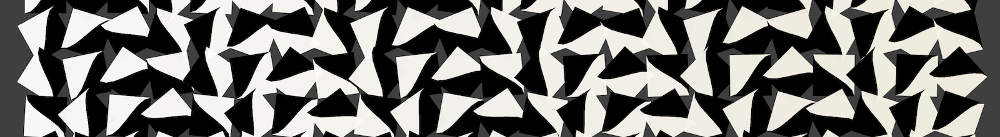

projects

A spinning tile visualization made with the
p5.js drawing library,
with a custom-made control interface for creating a wide variety of interesting patterns.
LED installation with custom-made software and controller for modulating patterns. Made with the Teensy microcontroller.
about
James is a software developer based on the west coast, with experience in the JavaScript ecosystem (node, React, Redux, etc), as well as C#, C++, SQL, and other technologies. Areas of interest include web development, tools, artificial intelligence, and visualizations.
résumé
PDF
james rowen / software developer
javascript / node.js / html / css / c# / c++ / python / sql / git
summary
Experience designing and maintaining web applications on a variety of tech stacks, from small tools to business-critical SaaS products, most recently focused on the JS ecosystem. Ability to dive in and get up to speed quickly on new projects and technologies. Comfortable wearing multiple hats and working on cross-functional teams.
experience
Software Development Engineer
Yahoo
2014 - 2016
Sunnyvale, CA
- Designed and developed an internal analytics front-end using React, Redux, and D3.js.
- Developed mini javascript apps adding interactivity to search results (e.g. a mortgage calculator).
- Contributed to a next-gen rewrite of the mobile search front-end.
- Helped administer the testing, hosting, and CI/CD pipeline for projects I worked on.
- Quickly became an integral member of the dev team of a successful enterprise SaaS product.
- Designed, developed, and maintained the most complex set of feeds and integrations implemented on the product.
- Committed code across the full stack of a large three-tier application - HTML/CSS/JS, C#, PL/SQL.
- Initiated and led a team of engineers tasked with supporting client implementations and custom development requests.
Website Developer
Freelance
2011 - 2012
Reno, NV
- Designed and developed websites for local businesses (primarily Wordpress).
- Implemented and maintained custom eCommerce storefronts.
- Worked with clients to understand their needs and design proposals.
projects
- Tiles is a visualization made using p5.js, with a custom interface for creating a variety of patterns.
- This site is handwritten HTML/CSS/JS/jQuery, utilizing responsive design and modern practices.
- DICOMbinator, a web app for annotating DICOM images with real-time communication, was the winner of a SXSW Interactive 24 hour hackathon in 2012. Node.js with socket.io.
education
Bachelor of Science, Computer Science (2007 - 2011)
University of Nevada